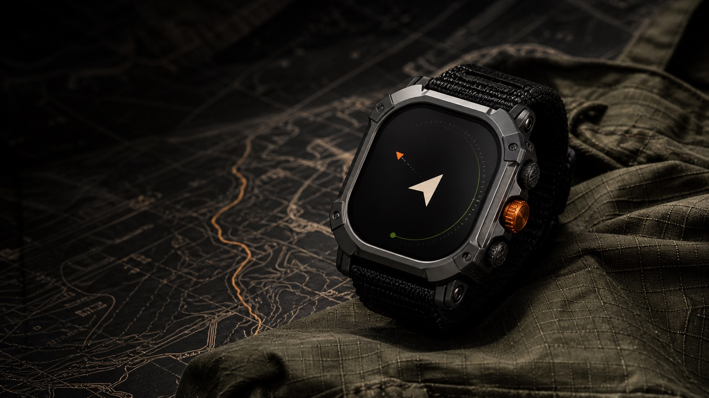
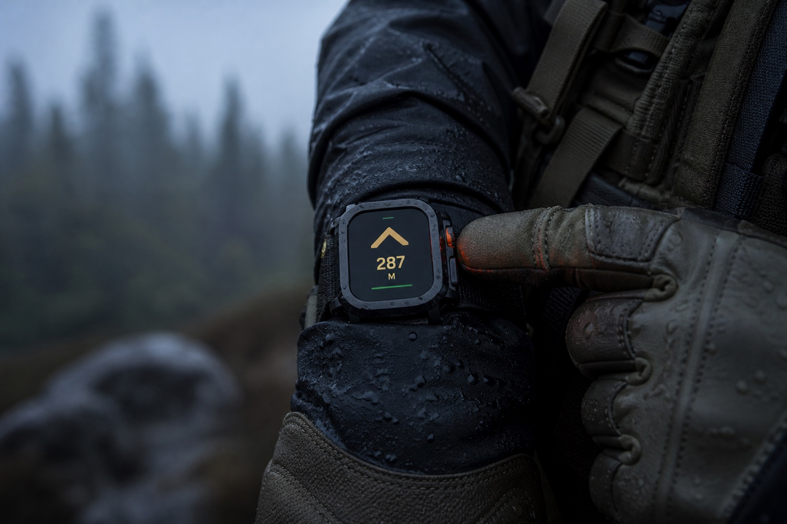
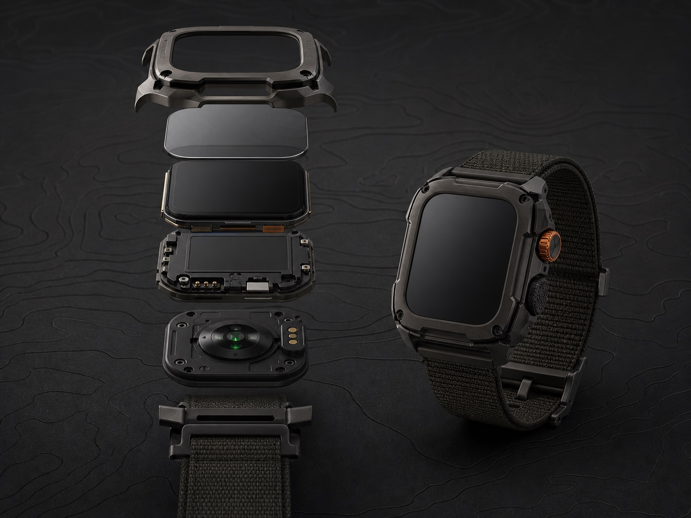

VIGIL Watch
Navigation, silent signals, self-status and critical acknowledgements.

Titan Company · Defence programme · Connected wearable
This defence-sector brief came to Titan Company, where our design team worked alongside Titan’s product group and a specialist technology vendor in Singapore. Together we shaped a rugged smartwatch into a four-part safety system—supporting navigation, communication and physiological-risk awareness without depending on touch, cloud access or constant attention.
The brief behind the brief
A conventional smartwatch assumes spare attention, bare fingers, connectivity and a user who wants more information. VIGIL’s user may have none of those.
Attention is the scarce resource. Interrupt only when a decision is required—not whenever new data exists.
Touch cannot be the primary input. Rain, gloves, darkness and stress turn ordinary gestures into failure points.
Health data must become team awareness. A soldier does not need another fitness dashboard; a medic needs an earlier signal.
Disconnected is normal. Critical behavior must survive without a phone, cloud account or public map service.

Designing for the worst minute
The product is judged when the user is wet, cold, moving, cognitively loaded and unable to look twice.
02 / Product strategy
The redesign separates who senses, who decides and who acts. Each surface exposes only the detail its role can use in that moment.
Navigation, silent signals, self-status and critical acknowledgements.
Mission setup, squad posture and encrypted local synchronization.
Severity-ranked casualties with trends, location and intervention notes.
Store-and-forward communication that keeps the squad useful when the phone is absent.
No public activity feeds · no background cloud sync · mission data expires by policy
03 / Industrial design direction
The squircle chassis creates more usable display area than the original round concept, protects impact zones and gives every physical control a distinct shape and position.

Raised corners take the hit before the anti-glare glass does.
Two paddles, one crown and a protected emergency press.
Optical heart rate and SpO₂, temperature trend and motion build a passive baseline.
Replaceable strap, sealed contacts and a modular sensor back.
Performance values are design targets for prototyping, not certified production claims.
04 / Interaction model
Primary tasks never require a precise tap. Each control keeps the same job across navigation, alerts and team signals—so action remains predictable in gloves, darkness or stress.
A raised double ridge distinguishes it by touch. Holding repeats the action.
A concave face makes the lower control unambiguous without looking.
One short press accepts. A 1.5-second hold returns to the mission face.
A recessed key prevents accidental use; haptic pulses confirm the hold.
Hydrate when safe. Recheck in 10 min.
Interactive watch prototype
Directional guidance stays useful under GPS degradation by showing source confidence and switching to heading-plus-distance when map precision is unreliable.
05 / Watch capability model
Features are organized by mission moment, not app icons. Most run passively, become haptic before visual, and reveal detail only after the soldier asks.
The interface changes the claim it makes—from precise route guidance to an honest heading based on the last trusted fix.
The delivery state is explicit: an acknowledgement can be safely queued without pretending the network has delivered it.
No single reading becomes a diagnosis. The system asks privately first and escalates only when evidence and policy agree.
Route corridor, bearing, breadcrumb return and growing confidence radius when GNSS becomes unreliable.
Pretrained haptic patterns for halt, move, rally, danger and acknowledgement.
Looks for combined changes in exertion, temperature, oxygenation, impact and motion.
Send “safe,” “need assistance,” “cannot move” or a preconfigured contact report with two physical actions.
Locally records route, alerts, acknowledgements and interventions for a controlled debrief.
When links fail, the watch keeps the last trusted plan, queues events and makes uncertainty visible.
06 / Health & safety
VIGIL avoids diagnosing. It watches for meaningful deviation from a soldier’s own baseline, asks for confirmation and escalates only when signals agree.
Heart-rate trend compared with motion and recent workload.
Temperature drift plus sustained exertion prompts recovery.
Repeated decline raises a private check-in before escalation.
A hard event followed by no movement opens a timed self-check.
07 / Secure setup
There is no device list, pairing code hunt or permanently discoverable Bluetooth radio. Physical proximity starts enrollment; explicit confirmation and device certificates complete it.
Touching devices exchanges only signed identity and a single-use setup token. No mission data travels over NFC.
The unlocked phone shows the assignee and mission; the wearer presses the amber crown. A matching three-word phrase detects the wrong device.
Where supported, short ranging confirms the enrolled devices remain together and later assists final-range teammate finding.
A temporary Wi‑Fi Aware/Direct link moves maps, firmware and encrypted mission packages without an access point or internet connection.
08 / Connected experience
VIGIL Field prepares watches, reveals squad exceptions and preserves a useful mission record—without turning into a surveillance dashboard.
Everything else stays in the background.
09 / Mobile operations toolkit
Its role starts before a watch is issued and continues after the mission closes. Capability is grouped by operational phase so the app never becomes a drawer of disconnected features.
 AT THE FIELD POST
AT THE FIELD POSTOne product thread links the wearer outside with the lead and medic at the field post—without assuming reliable cloud access.
Tap-pair the device, verify hardware identity, assign wearer and load role-based permissions.
Offline maps, routes, boundaries, rally points, haptic vocabulary and expiry policy.
Recognition drills make silent patterns learned behavior before they matter in the field.
Battery, sensor contact, map completeness, radio policy and baseline quality in one gate.
Ranks overdue check-ins, separation, health drift and low-confidence location.
Shares event context, recent trend, interventions and access-controlled medical notes.
Invalidate its certificate, queue key deletion and block it from the next mission package.
Correlates route, signals and safety events, then exports a redacted debrief.
10 / When the soldier cannot respond
VIGIL never equates one sensor reading or a lost link with a casualty. Each state has a different trigger, a different privacy cost and a different escalation path.
A hard event, absent motion and abnormal physiology agree. The wearer does not answer the timed haptic self-check.
A protected hold opens three physical choices: ambulatory, need assistance or urgent—without typing or speaking.
Separation combines time, route deviation and absence of expected peers. A single missed packet is never enough.
The product says what it no longer knows. It never freezes an old dot and presents it as current truth.
Capture is never inferred automatically from a lost link. A rehearsed two-control gesture can declare duress without changing the visible screen.
Loss of skin contact is not proof of injury. VIGIL distinguishes equipment state from human state.
11 / One mission, one thread
The lead downloads an offline area, sets route, rally points and alert policy. Each watch confirms maps, battery and baseline locally.
The soldier feels a turn cue, glances once for bearing and distance, then returns attention to the environment.
VIGIL prompts the wearer privately, then surfaces the trend to the lead only if it persists.
Impact plus immobility triggers self-check. No response sends identity, confidence, last location and vital trend to the medic.
Route, signals and safety events become a shared debrief. Personal health details remain access-controlled and expire by policy.
12 / What changed through design
The most meaningful iterations removed assumptions inherited from consumer wearables and turned operational constraints into product rules.
13 / Design outcome
The direction gives engineering and stakeholders a coherent model to prototype: shared principles, a physical interaction grammar and connected experiences that know when to reveal more.
The industrial design and performance values shown here are design direction, not production proof. Next we would test control differentiation with winter gloves, haptic recall after delayed training, false-positive tolerance for health escalation and battery behavior under sustained mesh use. Those findings should decide the final hardware—not the beauty of this render.
Final principle